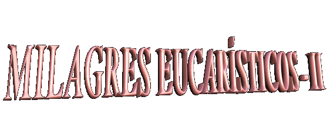

 8o, 9o
e 10o Milagres Eucarísticos
- Nos dias 30 de Junho, 1o e dia 2 de Julho de 1995 também
8o, 9o
e 10o Milagres Eucarísticos
- Nos dias 30 de Junho, 1o e dia 2 de Julho de 1995 também ocorreram em Naju admiráveis milagres. Milhares de peregrinos lotavam a Igreja
Paroquial, para comemorar o 10o Aniversário do derramamento de
lágrimas pela imagem de NOSSA SENHORA. A Santa Missa foi celebrada à noite de 30
de Junho e concelebrada por oito sacerdotes. A vidente estava sentada na parte
de trás da Igreja e foi à última a comungar. De repente, no instante da comunhão,
as pessoas ao redor notaram nitidamente que a Hóstia Sagrada na sua língua se
transformou num pedaço de carne coberto de sangue do SENHOR JESUS. Chocados e
repletos de emoção, muitos choraram, diante da realidade de ver bem a sua frente,
a carne viva do próprio DEUS. Os padres e as pessoas que estavam nas
proximidades testemunharam o notável fenômeno.
ocorreram em Naju admiráveis milagres. Milhares de peregrinos lotavam a Igreja
Paroquial, para comemorar o 10o Aniversário do derramamento de
lágrimas pela imagem de NOSSA SENHORA. A Santa Missa foi celebrada à noite de 30
de Junho e concelebrada por oito sacerdotes. A vidente estava sentada na parte
de trás da Igreja e foi à última a comungar. De repente, no instante da comunhão,
as pessoas ao redor notaram nitidamente que a Hóstia Sagrada na sua língua se
transformou num pedaço de carne coberto de sangue do SENHOR JESUS. Chocados e
repletos de emoção, muitos choraram, diante da realidade de ver bem a sua frente,
a carne viva do próprio DEUS. Os padres e as pessoas que estavam nas
proximidades testemunharam o notável fenômeno.
Terminada a Santa Missa, os peregrinos
acompanharam a vidente até a Capela, onde se encontrava a imagem, para o serviço
noturno de orações em continuidade as comemorações. Com o recinto completamente
ocupado por fieis entusiasmados que rezavam e cantavam hinos em louvor a VIRGEM
MARIA, iniciou-se a cerimônia.
No meio das orações Júlia começou a sentir
terríveis dores na região do abdômen, em reparação pelos abortos que assassinam
tantos inocentes. Uma cena impressionante retratando fielmente a desesperada
resistência da criança que não quer sair do útero de sua mãe que deseja abortá-la,
e pela boca da vidente, a criança manifesta todo o seu pavor pela morte que se
aproxima e grita: "Não mamãe, não
mãezinha, não me mate". Frei Francis Su, da Malásia,
convidou todos a se ajoelharem e rezarem pela conversão das pessoas que são
responsáveis pelo impiedoso assassínio de bebes. O povo emocionado chorava
e cantava, rezando com muita fé, agradecendo a DEUS aquela experiência
mística maravilhosa.
Eram 3 horas e 45 minutos da madrugada do
dia 1o de julho e toda assembléia em silêncio ouvia o relato
traduzido para o inglês, das últimas mensagens de nossa MÃE SANTÍSSIMA.
Subitamente, Júlia que estava na primeira fila ao lado de Frei Su, Frei Pete
Marcial e outros, levantou-se rapidamente e projetou-se para frente em direção a
imagem, estendendo vigorosamente as mãos, como se quisesse segurar algo que
ninguém via. Aconteceu que enquanto todos ouviam a leitura das mensagens que ela
mesmo recebera de NOSSA SENHORA, Julia viu a imagem de JESUS Crucificado que
está na parede da Capela, acima de onde se encontra a imagem da VIRGEM MARIA,
ganhar vida. O SENHOR estava com a face repleta de sofrimento... O sangue Divino
saía em quantidade de sete feridas: daquelas feitas pelos cravos nos pés e nas mãos,
pela lança do centurião no flanco direito entre a 5ª e a 6ª costela, pelo sangramento
na testa causado pela Coroa de Espinhos, e pela chaga do Sagrado Coração de
JESUS Crucificado. Logo, nas mencionadas sete chagas, o precioso sangue se
transformou em círculos brancos e em seguida, em puríssimas Hóstias Sagradas.
Algumas pessoas na Capela disseram que viram uma luz brilhante, como se fosse
uma rápida faísca sair do crucifixo. Outras pessoas ouviram um ruído semelhante
à queda de granizo. As Hóstias Sagradas se desprenderam das chagas de JESUS e
começaram a cair. Foi justamente neste momento que Júlia se lançou para frente,
estirando decididamente as mãos para pegá-las, a fim de não deixá-las cair no
chão. Porém as Hóstias graciosamente evitaram as mãos da Vidente e se acomodaram
sobre o altar, aos pés da imagem da VIRGEM MARIA, na presença de toda assembléia
admirada, que as viram surgir todas de uma vez sobre o Altar (As fotografias que apresentamos acima foram feitas
naquele exato momento). No instante em que as sete partículas
tocaram o altar, foi também o momento em que algumas pessoas ouviram o barulho como
se fosse de uma chuva de granizo.
para o inglês, das últimas mensagens de nossa MÃE SANTÍSSIMA.
Subitamente, Júlia que estava na primeira fila ao lado de Frei Su, Frei Pete
Marcial e outros, levantou-se rapidamente e projetou-se para frente em direção a
imagem, estendendo vigorosamente as mãos, como se quisesse segurar algo que
ninguém via. Aconteceu que enquanto todos ouviam a leitura das mensagens que ela
mesmo recebera de NOSSA SENHORA, Julia viu a imagem de JESUS Crucificado que
está na parede da Capela, acima de onde se encontra a imagem da VIRGEM MARIA,
ganhar vida. O SENHOR estava com a face repleta de sofrimento... O sangue Divino
saía em quantidade de sete feridas: daquelas feitas pelos cravos nos pés e nas mãos,
pela lança do centurião no flanco direito entre a 5ª e a 6ª costela, pelo sangramento
na testa causado pela Coroa de Espinhos, e pela chaga do Sagrado Coração de
JESUS Crucificado. Logo, nas mencionadas sete chagas, o precioso sangue se
transformou em círculos brancos e em seguida, em puríssimas Hóstias Sagradas.
Algumas pessoas na Capela disseram que viram uma luz brilhante, como se fosse
uma rápida faísca sair do crucifixo. Outras pessoas ouviram um ruído semelhante
à queda de granizo. As Hóstias Sagradas se desprenderam das chagas de JESUS e
começaram a cair. Foi justamente neste momento que Júlia se lançou para frente,
estirando decididamente as mãos para pegá-las, a fim de não deixá-las cair no
chão. Porém as Hóstias graciosamente evitaram as mãos da Vidente e se acomodaram
sobre o altar, aos pés da imagem da VIRGEM MARIA, na presença de toda assembléia
admirada, que as viram surgir todas de uma vez sobre o Altar (As fotografias que apresentamos acima foram feitas
naquele exato momento). No instante em que as sete partículas
tocaram o altar, foi também o momento em que algumas pessoas ouviram o barulho como
se fosse de uma chuva de granizo.
Lembraram-se que em 24 de Novembro
de 1994 nossa MÃE SANTÍSSIMA tinha pedido que colocassem um Sacrário
na Capela, ao lado de sua imagem. Parecia claro que aquelas sete Hóstias Sagradas
que acabavam de chegar, deveriam instalar-se lá dentro, no interior de um Cibório.
Este milagre foi levado ao conhecimento do
senhor Arcebispo Diocesano no mesmo dia. Contudo, ele instruiu Júlia e os outros,
para consumirem as Hóstias Sagradas e que não as deixassem guardadas no Tabernáculo.
Em obediência selecionaram sete pessoas para recebê-las: dois padres e cinco
leigos, entre eles estava a vidente.
e os outros,
para consumirem as Hóstias Sagradas e que não as deixassem guardadas no Tabernáculo.
Em obediência selecionaram sete pessoas para recebê-las: dois padres e cinco
leigos, entre eles estava a vidente.
No dia seguinte, 2 de Julho, os escolhidos
comungaram. Assim que ela recebeu a Sagrada Eucaristia o milagre se repetiu, a
Hóstia transformou-se em carne coberta de sangue, sobre a sua língua. Na
realidade ninguém esperava outro milagre, lembrando que menos de 48 horas
passadas, havia acontecido um na Igreja Paroquial. Mas ficou claro que nossa MÃE
SANTÍSSIMA estava tão ansiosa para restabelecer uma fervorosa devoção a
Eucarística, que enviou outro sinal surpreendente. O fenômeno aconteceu
assim:
A Capela, estava repleta de pessoas com
muita fé, que rezavam e se mantinham ansiosas na expectativa de que algum fato
novo pudesse acontecer ao mesmo tempo em que sensibilizadas, agradeciam ao
SENHOR DEUS por todos os ensinamentos e demonstrações de amor que vinham
ocorrendo. Júlia foi instruída pelo padre celebrante da Santa Missa, que por
ordem do senhor Arcebispo da Arquidiocese, se acontecesse outra vez o Milagre,
ela deveria ingerir imediatamente a Hóstia transformada em Corpo e Sangue Vivo
do SENHOR. Entretanto, sem querer desobedecer à decisão superior, diante do
impressionante milagre que se repetiu logo a seguir, para júbilo e comoção de
todos, Frei Su e Frei Marcial que estavam atentos aos acontecimentos,
conclamaram o povo a rezar fervorosamente diante do DEUS Vivo suplicando a
misericórdia Divina por causa dos muitos pecados do mundo. E todos numa
admirável postura de adoração, rezaram e louvaram o PAI ETERNO por aquele
magnífico e inigualável sinal, enquanto Júlia permanecia com a boca aberta
mostrando o SENHOR, que era filmado e fotografado pelas pessoas. E para que não
houvesse dúvida, os dois padres imergiram o dedo no Sangue Precioso sob a língua
da vidente e mostraram a todos na Capela. Era mais uma prova indiscutível e
definitiva do fenômeno que acabava de ocorrer. Depois enxugaram os dedos num
"Corporal", (pequeno tecido retangular
de linho) não só uma vez, mas repetiram este gesto
diversas vezes, até que o tecido ficou sensivelmente marcado pelo Sangue de
JESUS. Foi guardado zelosamente como mais um testemunho daquelas notáveis
manifestações sobrenaturais (a fotografia
abaixo registra o procedimento dos sacerdotes molhando o dedo no Sangue do
SENHOR). Até hoje o Corporal é preservado em Naju.
Frei Marcial, com o mesmo dedo que imergiu no Sagrado Sangue, tocou a face
de um bebê de seis (6) meses que estava com uma enfermidade terrível  que o condenava à morte. A criança ficou completamente
curada.
que o condenava à morte. A criança ficou completamente
curada.
Quando o CRIADOR nos dá sinais especiais,
ELE faz, não para satisfazer a nossa curiosidade, mas com um propósito Divino,
parte do Plano de Salvação da humanidade. Estes sinais na Coréia são
extremamente importantes, muito além de nossa capacidade de percepção. Por isso
também, quando o SENHOR nos dá sinais, devemos refletir profundamente sobre eles
e procurar compreender, sobretudo, que ELE espera uma resposta formal de cada um
de seus filhos. Por isso, é tempo de meditarmos sobre estes recentes sinais do
Céu e procurarmos extrair deles, todos os benefícios para a nossa vida.
12 oMilagre
Eucarístico- Aconteceu no Vaticano. Em 31 de Outubro
de 1995, Júlia em companhia de Monsenhor Nam Ik Paik, Júlio seu esposo, Rosa sua
filha e Raphael Son um seminarista, participaram de uma Santa Missa celebrada
pelo Papa João Paulo II. Havia também diversas autoridades e pessoas da França
que foram convidadas. Durante a Santa Missa, a vidente e seus companheiros foram
autorizados  a cantar hinos em coreano. No momento da comunhão quando o Santo
Padre ministrou a Sagrada Comunhão à Julia, aconteceu outra vez o Milagre
Eucarístico, a Partícula Consagrada na língua da vidente, se transformou
em Carne e Sangue do SENHOR.
a cantar hinos em coreano. No momento da comunhão quando o Santo
Padre ministrou a Sagrada Comunhão à Julia, aconteceu outra vez o Milagre
Eucarístico, a Partícula Consagrada na língua da vidente, se transformou
em Carne e Sangue do SENHOR.
Este milagre foi acompanhado minuciosamente
por Monsenhor Paik que estava ao lado dela. Ele testemunhou que a Hóstia encima
da língua de Júlia ao se transformar em carne coberta de sangue, ficou um pouco
maior e tomou a forma de um coração. Segundo a palavra do Monsenhor, este
fenômeno foi igual ao acontecido no
11o Milagre Eucarístico em Naju,
em 22 de Setembro de 1995, durante uma Santa Missa celebrada numa montanha
próxima a cidade, pelo Bispo Dom Roman Danylak de Toronto, Canadá
e concelebrada por dois outros sacerdotes.
Terminada a
Santa Missa, imediatamente Sua Santidade aproximou-se da vidente e testemunhou
o milagre. Deu-lhe a benção e um Rosário de presente.
13oMilagre
Eucarístico - Ocorreu na Capela de Naju, no dia da
comemoração do 11o Aniversário do derramamento de lágrimas pela
imagem de NOSSA SENHORA. Peregrinos de muitos países compareceram piedosamente para participarem das orações noturnas em homenagem a SANTA MÃE,
e lotavam o recinto. Aproximadamente às 3 horas da madrugada do dia 1o
de Julho de 1996, Júlia viu o Precioso Sangue fluir das sete Chagas de JESUS no
Crucifixo fixado na parede, acima da imagem da VIRGEM MARIA, como no ano
anterior. O Sangue logo se transformou em Hóstias Sagradas envolvidas por uma
luz brilhante. A luz ficou mais forte e começou a brilhar em todos aqueles que
estavam presentes na Capela, assim como nas pessoas que estavam do lado de fora.
Então um feixe de luz muito poderosa irradiou do Crucifixo e alcançou a vidente,
que deu um forte grito e caiu ao chão por causa de extremas dores em sete
lugares de seu corpo: na cabeça, em ambas as mãos, nos pés, no lado e no
meio do peito encima do coração, ou seja, nos mesmos locais das chagas
de JESUS. Ainda estava com a boca aberta após o grito de dor, quando
as Hóstias Sagradas se desprenderam do Crucifixo e entraram suavemente
em sua boca (a fotografia acima
à direita, foi feita no exato momento). Frei Francis Su,
dois outros sacerdotes e as pessoas que se encontravam ao redor da vidente,
viram as Hóstias Sagradas se acomodarem na boca de Júlia Kim.
piedosamente para participarem das orações noturnas em homenagem a SANTA MÃE,
e lotavam o recinto. Aproximadamente às 3 horas da madrugada do dia 1o
de Julho de 1996, Júlia viu o Precioso Sangue fluir das sete Chagas de JESUS no
Crucifixo fixado na parede, acima da imagem da VIRGEM MARIA, como no ano
anterior. O Sangue logo se transformou em Hóstias Sagradas envolvidas por uma
luz brilhante. A luz ficou mais forte e começou a brilhar em todos aqueles que
estavam presentes na Capela, assim como nas pessoas que estavam do lado de fora.
Então um feixe de luz muito poderosa irradiou do Crucifixo e alcançou a vidente,
que deu um forte grito e caiu ao chão por causa de extremas dores em sete
lugares de seu corpo: na cabeça, em ambas as mãos, nos pés, no lado e no
meio do peito encima do coração, ou seja, nos mesmos locais das chagas
de JESUS. Ainda estava com a boca aberta após o grito de dor, quando
as Hóstias Sagradas se desprenderam do Crucifixo e entraram suavemente
em sua boca (a fotografia acima
à direita, foi feita no exato momento). Frei Francis Su,
dois outros sacerdotes e as pessoas que se encontravam ao redor da vidente,
viram as Hóstias Sagradas se acomodarem na boca de Júlia Kim.
Depois das 12 horas e 30 minutos do dia
1o de Julho de 1996, novamente ela teve as fortes dores da crucificação
e começou a sangrar nas palmas das duas mãos. Frei Raymond Spies, Frei Francis
e algumas pessoas, testemunharam o acontecimento.
Aproximadamente às 13 horas do dia seguinte,
2 de Julho de 1996, Frei Spies, a vidente e outras pessoas, rezavam diante da
imagem de nossa MÃE SANTÍSSIMA na Capela, quando de repente, ela gritou forte
e caiu ao chão. Acabara de receber um poderoso feixe de luz do Crucifixo e sofreu
as mesmas dores da crucificação em sete partes do corpo, como no dia anterior,
sangrando nas palmas das duas mãos. Colocaram luvas para esconder as chagas
e a hemorragia, mas as luvas ficaram molhadas com sangue.
Por
recomendação de seu diretor espiritual, às 16 horas deste mesmo dia, Júlia
visitou dois hospitais em Kwangju a fim de mostrar os ferimentos nas palmas das
mãos. Os doutores examinaram as chagas e a hemorragia, emitindo declarações por
escrito, dizendo que elas tinham origem desconhecida e por isso, não podiam ser
explicadas como provenientes de qualquer causa natural. No dia seguinte, o
sangramento cessou e as chagas desapareceram.


Detalhe de uma
das Hóstias que desceram das Chagas de JESUS. - Frei Spies levanta uma
Hóstia diante da imagem de NOSSA SENHORA. A foto mostra também
o Crucifixo encima, de onde vieram todas as Hóstias das Chagas do
SENHOR.

Sua Santidade
o Papa João Paulo II, após a celebração da Santa Missa,
na Capela do Vaticano testemunha a Sagrada Comunhão transformada
em Corpo e Sangue do SENHOR JESUS, sobre a língua da vidente
Júlia Kim.

Página
Anterior
 Próxima
Página
Próxima
Página
Retorna ao Índice